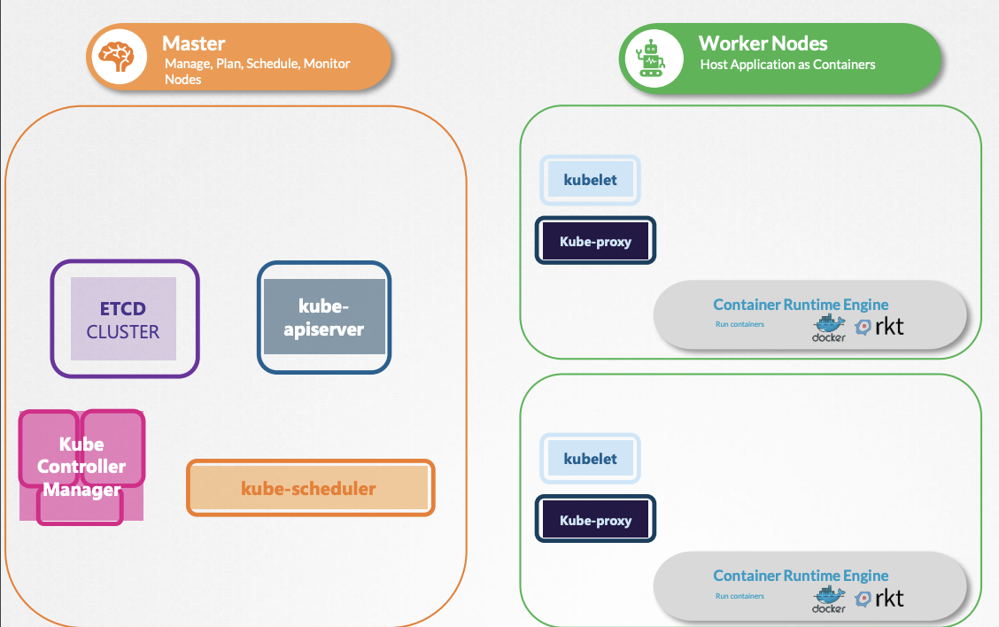
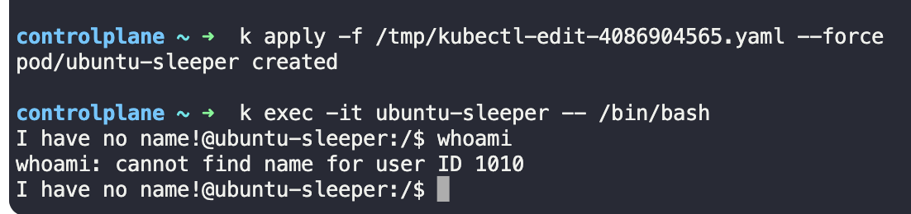
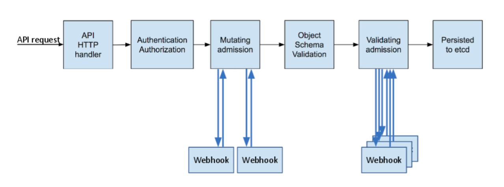
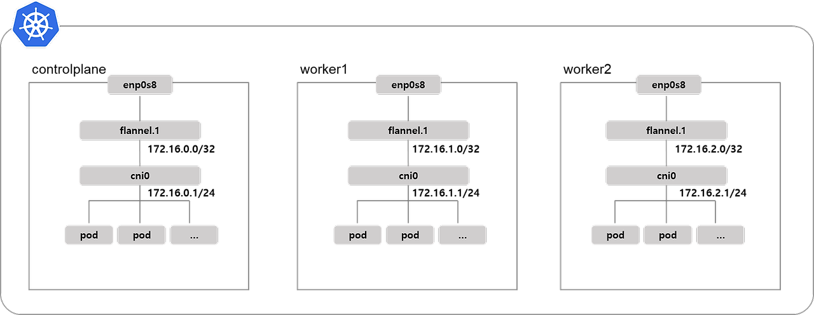
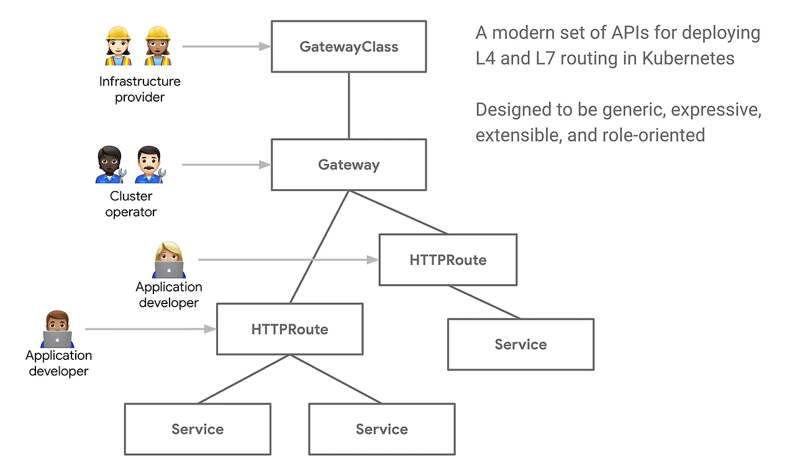

Kubernetes (CKA)¶
참고: https://kubernetes.io/docs/home/
참고: https://www.udemy.com/course/certified-kubernetes-administrator-with-practice-tests/
쿠버네티스 아키텍쳐¶

공통¶
- Container Runtime Engine
- 모든 노드에서는 docker, rkt 등 컨테이너 엔진이 필요
Master Node¶
- 역할 - Manage / Plan / Schedule / Monitor
- ETCD cluster
- key-value 형식의 DB
- 2379 포트에서 listening
- 클라이언트 요청용 (API 서버 등 컨트롤 플레인 구성 요소 여기에 연결)
- 2380 포트
- etcd간 p2p 통신용 (etcd 클러스터 구성시 사용)
- 클러스터가 혼자만으로 구성되어도 2380 포트에서 구동 가능
- kube-scheduler
- 어떤 Pod가 어떤 Node에 들어갈지 결정 (실제 배치는 Kubelet에서 진행)
- 적재할만큼 용량이 되는지, 올바른 dest 인지
- Scheduling
- Filter Nodes: Cpu/memory 하한 검증
- Rank Nodes: 0~10 점수 메겨서 어디가 적합할지 검증
- 어떤 Pod가 어떤 Node에 들어갈지 결정 (실제 배치는 Kubelet에서 진행)
- kube-controller-manager
- node controller: 노드 상태 및 장애 감지
- replication controller: 파드 갯수 유지 및 복제 관리
- endpoint controller: 서비스-파드 간 연결 관리
- service account & token controller: API 접근 위한 계정/토큰 관리
- 기타 역할 많음: deployment, namespace, endpoint, job, pv-protection, service-account, pv-binder, cronjob, stateful set, replicaset
- kube-apiserver
- 클러스터 구성요소 통신하는 중심 허브
kubectl명령어 및 다른 클라이언트 요청 처리- 인증/인가
- etcd 통신하여 클러스터 상태 저장/조회
Worker Node¶
- kubelet
kube-apiserver에게 현재 워커 노드 상태 보고- 각 Container의 선장으로, 컨테이너 런타임을 통해 컨테이너 실행/모니터링
- Node Register
- Pod 생성
- Node/Pod 모니터
- kube-proxy
- 네트워크 통신 관리 역할
- iptable/IPVS 통한 네트워크 트래픽 라우팅
- iptable을 통해서 서비스 forwarding
- 클러스터 내/외부 서비스 접근을 위한 네트워크 규칙 설정
Kubernetes Workload Resource¶
- ReplicaSet
- 특정 갯수의 Pod 갯수를 유지하는 역할
- 파드 죽으면 새로운 파드 생성
- 직접 사용하기보단 Deployment에서 주로 관리
- Deployment
- 내부적으로
ReplicaSet생성/관리 - 어플리케이션 배포 및 업데이트 기능 제공
- 롤링 업데이트 및 롤백 가능
- 내부적으로
- DaemonSet
- 클러스터의 모든(혹은 특정) 노드에 하나의 파드를 실행하도록 보장하는 리소스
- 각 노드 별 하나의 파드로 배포하는 방식
- 특징
- 모든 노드에 자동 배포
- 노드마다 하나의 파드만 실행됨
- 일반적인 사용 사례
- 로그수집 에이전트 (Fluentd, Logstash)
- 모니터링 에이전트 (Prometheus Node Exporter, Datadog)
- 네트워크 관리 도구 (CNI 플러그인, kube-proxy)
- 보안/시스템 관리 도구 (Falco, Sysdig)
Kubernetes Pods¶
- Args
- Dockerfile에 있는
ENTRYPOINT,CMD는 쿠버 Pod의command,args필드로 오버라이딩 가능
- Dockerfile에 있는
- Pod Priority, Preemption
- 참고: https://malwareanalysis.tistory.com/653
kube-scheduler가 더 이상 pod를 스케줄링하지 못할 경우, 우선 순위가 낮은 pod를 제거하고 새로운 pod를 스케줄링- ex) Node에 용량이 꽉 찼는데, 우선순위 높은 pod가 생성 요청 -> 우선 순위 낮은 pod 종료/빈 자리에 pod 스케줄링
- 언제 사용하지?
- 대기 시간을 최소화하기 위해 우선순위가 낮은 pod 미리 생성하여 노드 추가하는 AWS 카펜터의 오버프로비저닝
- Multi-container pod
- 참고: https://seongjin.me/kubernetes-multi-container-pod-design-patterns/
- 하나의 Pod 안에 여러개의 Container가 있는 경우
- 필요에 따라 메인 프로세스에 도움을 줄 수 있는 보조적인 역할의 컨테이너를 더해서 운영
- 메인 프로세스를 네트워크/스토리지의 밀접한 공유가 필요한 다른 컨테이너와 함께 운영하고자 할 때
1.
Sidecar Pattern- 하나의 컨테이너는 하나의 책임만 가져야 한다
- 두 컨테이너는 하나의 파드에 떠있어 file system 공유
- ex) Log container(Sidecar), Webapp container(Main)
2.
Adapter Pattern - 특정 어플리케이션의 출력물 규격을 필요에 맞게 다듬는 용도
- 이질적인 어플리케이션으로부터 출력물의 상호 호환성을 만들어주는 용도
- ex) 오픈소스 어플리케이션 어떤건 포맷
YYYY-MM-DD, 어떤건DD/MM/YYYY3.Ambassador Pattern - 파드 외부의 서비스에 대한 엑세스를 간소화하는 특수한 유형의 컨테이너
- ex) 메인 컨테이너의 네트워크를 전담하는 프록시 역할을 수행하는 컨테이너
- 예시) sidecar 컨테이너에서 동일한 웹앱의 log-volume 볼륨을 마운팅하여 filebeat로 전송하는 구조
apiVersion: v1 kind: Pod metadata: name: app namespace: elastic-stack labels: name: app spec: containers: - name: app image: kodekloud/event-simulator volumeMounts: - mountPath: /log name: log-volume - name: sidecar image: kodekloud/filebeat-configured volumeMounts: - mountPath: /var/log/event-simulator/ name: log-volume volumes: - name: log-volume hostPath: path: /var/log/webapp type: DirectoryOrCreate
- Init Container
- 파드의 메인 컨테이너 실행 전 초기화 역할을 담당하는 컨테이너
- 파드에 메인 프로세스 구동하는데 필요한 사전작업/조건 걸어두고, 완료된 뒤에 메인 프로세스 시작토록
- 일반 컨테이너와의 차이점
- 모든 초기화 컨테이너는 의도된 작업 끝나면 반드시 종료될 것
- 초기화 컨테이너는 생명주기 관련 옵션(lifecycle), probe 옵션 사용 X
- 정상 종료되면 다음 컨테이너 순서 넘어감. 순차적 시작
- 초기화 컨테이너 구동 실패시, 성공할때까지 컨테이너 계속 재시작.
Kubernetes Service & Ingress¶
- 개요
- 여러개의 파드를 하나의 네트워크 엔드포인트 (고정 IP)로 묶어주는 역할
- 파드가 동적으로 변해도 안정적인 네트워크 접근 제공
- 로드밸런싱 가능
- 내부/외부 트래픽 파드로 전달
- 관리할 파드를 지정하기 위해서는, Service selector에 정의한 라벨들을 Pod에서 모두 가지고 있어야 한다.
- ClusterIP
- 클러스터 내부에서만 접근 가능한 가상 IP 부여
- 외부 접근 X
my-service.default.svc.cluster.local같은 내부 DNS 접근 가능- ex. 클러스터 내부에서만 사용되는 마이크로서비스간 통신
- NodePort
- 각 노드의 특정 포트를 통해 외부에서 접근 가능
<노드IP>:<노드Port>통해 외부에서 접근 가능- 포트 범위: 30000~32767
- 작은 규모 테스트/내부 네트워크 운영시 사용
- LoadBalancer
- AWS/GCP/Azure에서 외부 로드 밸런서 자동 생성
- 클라우드 벤더가 제공하는 외부 로드 밸런서를 사용하여 트래픽을 파드로 전달 가능
EXTERNAL-IP통해 클러스터 외부에서 직접 접근 가능 (클라우드 서비스에서만)
- AWS/GCP/Azure에서 외부 로드 밸런서 자동 생성
- ExternalName
참고: https://velog.io/@rockwellvinca/kubernetes-%EC%95%A0%ED%94%8C%EB%A6%AC%EC%BC%80%EC%9D%B4%EC%85%98-%EB%85%B8%EC%B6%9C%EB%B2%95-Externalname- 클러스터 내부의 파드가 외부 서비스에 접속할 때, 네트워크 트래픽 제어, 보안 정책 등으로 어려움이 있을 수 있음
ExternalName을 활용함으로써, 클러스터 내부의 서비스에 접속하듯 외부 도메인에 접속할 수 있음- 클러스터 내부 서비스에서 외부 서비스에 도메인 이름을 통해 접근할 때 사용 (DNS 기반 라우팅)
- 내부 파드가 외부의 특정 FQDN에 쉽게 접근하기 위한 서비스
- FQDN: Fully Qualified Domain Name - 도메인 전체 이름 표기하는 방식
- 실제 트래픽은 쿠버 네트워크 벗어나 외부 서비스로 전송
- 쿠버네티스 내부에서 외부 DB에 접근
- 클러스터 내부에서 외부 API 서버 호출
- 내부 DNS를 통해 외부 서비스로 트래픽 라우팅
- ex)
- Ingress
- 쿠버네티스 내부 서비스에 대한 HTTP/HTTPS 요청 관리하는 API Gateway
- 쿠버 클러스터 외부에서 들어오는 HTTP/HTTPS 요청을 내부 서비스로 라우팅하는 역할 수행
- 특징
- 여러 서비스를 하나의 진입점 (도메인) 관리 가능
- 경로/호스트 기반 라우팅 가능
- SSL/TLS 가능
Scheduling¶
- Taints & Tolerations
- 참고: https://gngsn.tistory.com/282
- 특정 노드에서 특정 파드를 제한하거나 허용하는 메커니즘
- Pod가 적절치 않은 노드에 스케줄링 되지 않는 것을 보장
- [Taints]: 노드에 적용하는 제한 규칙 (퇴치제)
- 특정 Node에 아무 Pod나 배치되지 않게 Taint 상태를 만들어줌
- 등록 =
kubectl taint nodes {node-name} {key}={value}:{taint-effect} - 제거 =
kubectl taint nodes {node-name} {key}={value}:{taint-effect}- - ex)
kubectl taint nodes node1 env=production:NoSchedule- NoSchedule: 일치하는 toleration이 없으면 node1에 스케줄하지 않는다
- Taint Effect)
- NoSchedule: Pod가 Node에 스케줄되지 않음. 기존 실행되던 Pod는 유지.
- PreferNoSchedule: Pod가 Node에 스케줄되지 않도록 최대한 노력. but 보장은 아님
- NoExecute: 새로운 Pod는 해당 Node에 위치되지 않으며, 만약 Node에 존재했던 Pod가 있다면 아래 조건에 따라 처리
- Tolerate 되지 않은 Pod => 바로 퇴출
- Tolerate 된 Pod, toleration spec에 tolerationSeconds가 지정 X => 영구적 바인딩
- Tolerate 된 Pod, toleration spec에 tolerationSeconds가 지정 O => 해당 시간 이후 퇴
- [Toleration]: 파드가 특정 노드의 제한을 무시하고 실행될 수 있도록 허용하는 설정 (내성)
- 지정하고자 하는 Pod에 Toleration 규칙을 달아 특정 Node에 접근할 수 있도록 만듦
- Toleration 조건 (Taint Node에 할당될 수 있는 조건)
- Master Node에는 초기 설정부터 자동 taint 설정되어 있음
> k describe node kind-control-plane -n kube-system | grep TaintTaints: node-role.kubernetes.io/master:NoSchedule
- nodeName
- Pod의
spec.nodeName필드를 활용하면 해당 Pod가 직접 특정 노드에 할당되도록 지정 가능 - nodeSelector/nodeAffinity 보다 더 직접적.
- 스케줄러가 개입 X => 지정한 노드에 바로 Pod 배치
- 해당 이름에 노드가 없으면 pending 상태로 유지
nodeName>>nodeSelector||nodeAffinity
- Pod의
- nodeSelector
- node Selector 조건 중 가장 간단.
- pod에서 타겟으로 삼고 싶은 노드가 가진 node labels 지정
- 하지만, not ssd, ssd or hdd 이런 논리 연산자 등의 사용은 어려움
- 딱 맞게 딱 지정해서 쓸 것!
- 노드 라벨 확인:
kubectl get node node01 --show-labels - 예시)
- add label to node
kubectl label nodes node01 disktype=ssd
- node label 보기
kubectl get nodes --show-labels
- 해당 node로 pod 스케쥴링하기
- add label to node
- nodeAffinity
- 특정 조건을 만족하는 노드에만 파드 배치하도록 강제 (nodeSelector의 확장)
- Pod에 직접 해당 조건을 쓰거나, Deployment의 Template에 해당 조건을 포함하자.
- 강제 배치:
requiredDuringSchedulingIngnoredDuringExecutionapiVersion: v1 kind: Pod metadata: name: nginx labels: env: test spec: containers: - name: nginx image: nginx affinity: nodeAffinity: requiredDuringSchedulingIgnoredDuringExecution: nodeSelectorTerms: - matchExpressions: - key: gpu operator: In values: - "true"apiVersion: apps/v1 kind: Deployment metadata: name: blue spec: replicas: 3 selector: matchLabels: app: blue template: metadata: labels: app: blue # spec.selector.matchLabels의 값과 일치할 것 spec: containers: - image: nginx name: nginx affinity: nodeAffinity: requiredDuringSchedulingIgnoredDuringExecution: nodeSelectorTerms: - matchExpressions: - key: color operator: In values: - blue - 선호 배치:
preferredDuringSchedulingIgnoredDuringExecution
- Additional Scheduler
- 커스텀 스케줄러가 생성 가능하다.
- yaml에
schedulerName: ~으로 지정할 수 있음
Kubernetes Configuration¶
- Static Pods
- kubelet이 스스로 만든 Pod (타 쿠버 클러스터 컴포넌트와 무관)
- 특정 노드에서 직접 실행되는 파드
- kubelet에 의해 직접 관리되며, API 서버 등록되지 않아도 실행 가능
- 쿠버네티스 스케줄러가 관여 X
- 셋업 경로:
/etc/kubernetes/manifest - Control Plane(MasterNode)에 의존적이지 않기에, Control Plane 자체를 구성하는데 쓸 수 있음
- Multi-Container Pods
- 사이드카로 같이 하나의 pod에 올릴 container 등록 가능
- ConfigMap
- 환경변수, 명령줄인자, 설정파일 등 저장 가능
- Pod와 독립적으로 관리됨
- k-v 페어로, data 관리
- configMap)
- pods)
- Secrets
- 참고: https://binux.tistory.com/176
- yaml
kind: Secret으로 생성하면, k-v BASE64 인코딩해서 저장 (깃헙에 푸시하지마...)- helm secret, vault 등을 추천
- 시크릿 역시 타 쿠버 리소스와 마찬가지로 etcd에 저장됨
- Secret 저장해도 etcd에는 그냥 plaintext로 보임 => "etcd 암호화 가능하도록 만들자!"
--encryption-provider-config활성화 여부 체크 1. 정적 키 암호화- Api Server에서 이를 바라보고 재시작되어야 함 2. 봉투 암호화
- KMS(Key Management Service)와의 통합을 통해 Envelope encryption 가능
- Secret 저장해도 etcd에는 그냥 plaintext로 보임 => "etcd 암호화 가능하도록 만들자!"
- 유저에게 ClusterRoleBinding, ClusterRole을 함부로 주지 않을 것
- Secret은 Namespace 범위이기에, Secret이 존재하는 Namespace의 Pod에서만 사용 가능
- 사용 방법
- 환경 변수 - 직접 yaml에 작성해 활용
- 시크릿 볼륨 주입 - 직접 yaml에 작성해 활용
- 쿠버네티스 API - 어플리케이션 실행 중 시크릿에 접근하는 방법
- kube-api-server와 통신하며 시크릿 검색, 이를 주입/사용에 대한 책임을 어플리케이션에게 위임
- Vault
- 쿠버와 통합 지원
- Mutating webhook 통해 Init Container, sidecar container 붙어 동작
- 파드의 파일시스템에 주입되어, 파드에서 실행하는 모든 컨테이너에서 사용 가능
- 시크릿 봉인 (Sealed Secret)
- 비대칭 암호화를 통해, gitops (yaml github으로 관리) 방식에서도 살아남도록
- 시크릿을 공개키로 암호화해 커밋해, 데이터 노출 우려 X
- logging/monitoring
- metrics server
- 클러스터 당 하나 설치 권장
- Node/Pod 정보 받아 인메모리에 저장: 히스토리 X
- minikube:
minikube addons enable metrics-server - others:
git clone https://github.com/kubernetes-incubator/metrics-server.git && k create -f deploy/1.8+/
- view
k top node,k top pod
- log
- 도커라면:
docker logs -f image - 쿠버라면:
kubectl logs -f event-pod
- 도커라면:
- metrics server
Security¶
- Certificate Signing Requests
- 참고: https://mr-zero.tistory.com/579
- 클러스터의 오브젝트/서비스에 접근하기 위해 유저에 대한 인증/인가를 위한 인증서 사용
- 인증서 생성하기 위한 작업의 일환으로 유저의 개인키에 대한 signing을 k8s의 CA에 요청시 CertificateSigningRequest API 사용
- 프로세스
- [create KEY] -> [create CSR] -> [API] -> [download CRT from api] -> [use CRT+KEY]
- CRT: CA가 csr을 보고 서명해서 발급해준 인증서
- 실습
- key 생성:
openssl genrsa -out [name].key 2048 - csr 생성:
openssl req -new -key [name].key -out [name].csr - csr base64 인코딩:
cat [name].csr | base64 -w 0 - CertificateSigningRequest 생성 및 요청 (apply)
- CSR 승인:
k certificate approve [csr_name]- 거부는:
k certificate deny [csr_name]
- 거부는:
- CSR로부터 CRT 생성:
k get csr [csr_name] -o yaml
- key 생성:
user가 생성이 되었다는 것- 쿠버네티스에서
user는 쿠버 클러스터 내부의 오브젝트로 생성되지 않음kubeconfig파일에 정의된 인증 정보에 따라 존재하는 개념kubectl에서--as dev-user옵션을 사용하면, kubeconfig에 정의된dev-user라는 사용자로 요청 보냄
- 쿠버네티스에서
- kubeconfig
- 참고: https://nayoungs.tistory.com/entry/Kubernetes-Kubeconfig
- k8s의 설정파일로, 클러스터에 대한 접근을 구성하는데 사용하는 파일
kubectl명령어로 apiserver에 접근할 때 사용할 인증 정보를 담음- 구조
clusters: 쿠버네티스 API 서버 정보(IP, 도메인)로, 여러 클러스터 명시 가능users: 쿠버네티스 API에 접속하기 위한 사용자 목록, 인증 방식에 따라 형태 다름context: user와 cluster 사이의 관계를 매핑한 것으로, 어떤 context 사용하느냐에 따라 cluster와 user가 결정- context 기반으로 어떤 Cluster에 어떤 User가 인증을 통해 쿠버를 사용한다
- context에는 여러 종류 있을 수 있으며, 현재 사용하는 context를 current-context라고 함
- 위치:
~/.kube/config/etc/kubernetes/pki에 인증서와 키가 존재kubectl은 항상~/.kube/config을 먼저 찾음- 해당 디렉토리가 아니라면,
KUBECONFIG환경변수를 설정할 수 있음 --kubeconfig옵션을 사용하여 타 kubeconfig 파일 사용할 수 있음
- context 확인
k config use-context myadmin@myclusterk config current-context
- 쿠버네티스의 사용자들
- 참고: https://jonnung.dev/kubernetes/2020/06/18/kubernetes-user-authorizations/
- 쿠버네티스 설정 (kubeconfig)는 3가지 부분으로 구성됨
- clusters: 클러스터 명시. 쿠버네티스 API 서버 정보
- users: 쿠버API에 접속하기 위한 사용자 목록. 인증 방식에 따라 형태가 달라질 수 있음
- context: cluster 항목 - user 항목 중 하나씩 조합하여 만들어짐
- 쿠버의 Context에 명시된 User는 인증을 거쳐야 접근이 허용됨
- 인증 절차를 위해 활용하는 대표적인 방법은
X.509 인증서,ServiceAccount 토큰
- 인증 절차를 위해 활용하는 대표적인 방법은
X.509 인증서- 쿠버네티스 설치할 때 자동 생성
- 마스터 노드 서버에서 직접 kubectl 실행 시, kubectl 참조하는 kubeconfig 파일에 인증서 내용 들어있음
/etc/kubernetes/pki/ca.crt를 루트 인증서로 하여 만들어진 하위 인증서임
Service Account- 쿠버네티스 상에 존재하는 오브젝트, 네임스페이스마다 각각 정의 가능
- 각 네임스페이스에는 기본적으로
default서비스 어카운트가 자동으로 생성됨- 서비스 어카운트 만들면 JWT 토큰이 자동으로 함께 생성되어 쿠버 시크릿에 저장
User- 쿠버에는 User 개념은 있으나, 추상적인 의미
- 내부에 저장되는 데이터가 아닌 단순히 문자열로 식별할 수 있는 값으로 사용
- ex)
X.509 인증서활용 시...- 인증서 만들 때 CN='joel' 이라면, 이 인증서를 통해 인증된 사용자는 쿠버 상에 User=joel로 지징가능
Group- User와 마찬가지로 추상적인 개념
- User와 마찬가지로 문자열 형태로 표현
- 쿠버에서 미리 정의해둔 그룹
system:으로 시작system:unauthenticatedsystem:authenticatedsystem:serviceaccountssystem:serviceaccounts:<네임스페이스이름>
- RBAC
- 위의 쿠버 사용자 식별 개념 3가지 (SA, User, Group)은 인증으로써의 기능
- 쿠버 오브젝트 사용권한 검사, 인가는 RBAC을 통해 지정
- Service Accounts
- pod 안에서 serviceAccount, serviceAccountName 정의할 수 있음
- 이를 통해 pod 안에서 쿠버 API를 접근하게 할 수 있음
- 기본으로 정의 안하면 default가 SA로 매핑되는데, 이는 타 리소스 접근에 한계가 있음
- Security Context
- 참고: https://velog.io/@zero/%EC%BF%A0%EB%B2%84%EB%84%A4%ED%8B%B0%EC%8A%A4-SecurityContext-%EA%B0%9C%EB%85%90-%EB%B0%8F-%EC%84%A4%EC%A0%95
- 참고: https://doitnow-man.tistory.com/entry/CKA-42-k8s-%EA%B0%81%EC%A2%85-%EB%B3%B4%EC%95%88-image
- 개념
- 쿠버네티스는 컨테이너 실행 시, 기본 root 권한으로 실행
- root 권한에서의 컨테이너 실행 방지하기 위해 파드/컨테이너 단위로 실행시킬 PID를 지정
- 옵션
runAsUser: 파드/컨테이너 실행시킬 PID 지정runAsGroup: 파드/컨테이서 실행시킬 GID 지정fsGroup: 볼륨 마운트 시 활용할 PID 지정runAsNonRoot: 컨테이너를 루트가 아닌 사용자로 실행할지 지정
- container security context
- container 수준에서 설정하면, 특정 컨테이너에 대한 보안 설정을 개별적으로 정의 가능
- container 우선 순위가 pod 보다 더 높음
- capabilities 설정 가능
- ex) CAP_SYS_TIME, CAP_LAST_CAP 등...
- 적용

- Custom Resource, Custom Resource Definition
- 참고: https://frozenpond.tistory.com/111
- [Custom Resource Definition]
- Custom Resource를 etcd에 등록하기 위해서는 CRD 혹은 AA 이용이 필요
- [Custom Resource]
- 오브젝트를 직접 정의하여 사용. 소스코드 수정 없이 API를 확장해 사용할 수 있음
- 리소스가 등록/변경 되었을 때 쿠버 클러스터에게 특정한 operation을 주고 싶다면 custom controller 사용해야 함
Application Lifecycle & Management¶
- Deployment Strategy
- Rolling Update
- 기본값 (명시 안하면 기본 이거)
- 기존 파드 점진적으로 교체하여 어플리케이션 업데이트
- 서비스 중단없이 고가용성 유지하며 배포
- 설정할 수 있는 주요 옵션
maxSurge: 한번에 최대 몇개의 파드를 새롭게 생성할 수 있는지?maxUnavailable: 업데이트 중 최소한으로 유지되어야 하는 파드 수 설정
- Recreate
- 기존의 파드 종료한 뒤 새로운 버전의 파드 전부 시작
- 서비스 중단 발생함
- Rolling Update
- Lifecycle Management
- 라이프사이클 훅과 조정방법으로 수명주기 관리 가능
1. Pod Lifecycle
Pending->Running->Success|Failed- InitContainer
- Pod의 메인 컨테이너 실행 전 반드시 실행되어야 하는 준비 작업
- initContainer가 완료되어야 다음 InitConainer/MainContainer 실행
- Hooks
postStart: 컨테이너가 생성된 직후 실행. ENTRYPOINT와 병렬 실행될 수 있음preStart: 컨테이너 종료되기 직전 실행되는 Hook. graceful shutdown을 위함 2. Horizontal Pod Autoscaler (HPA): 파드 수 부하에 맞게 리소스 할당 3. Rolling Back
- 배포 중 문제가 발생하면 기존 버전 롤백 가능.
- Deployment 리소스에 대해 버전 관리 제공
kubectl rollout undo deployment/my-appkubectl rollout undo deployment/my-app --to-revision=2
- 라이프사이클 훅과 조정방법으로 수명주기 관리 가능
1. Pod Lifecycle
- Horizontal Pod Autoscaling (HPA)
- 참고: https://velog.io/@rockwellvinca/EKS-HPAHorizontal-Pod-Autoscaler%EC%99%80-VPAVertical-Pod-Autoscaler
- Vertical: CPU/Memory 더 많이 쓰자! 재구동이 필수
- Horizontal: 서버 댓수 더 끌어와서 Load Balance
- Scale out/Scale in
- 동일한 파드가 복제되는 것, 수량 자체가 늘어나게
- HPA: 쿠버에서 리소스 사용량 기반으로 자동으로 Pod 갯수를 조절
- 주기적으로 메트릭 확인 -> 설정 기준 초과/미만 시 ReplicaSet의 Pod 갯수 조절
- CPU 사용율, 메모리 사용율 기반 조정
- Custom Metrics 사용 가능 (ex. HTTP 요청, Kafka MQ 길이)
- 다만 Custom Metrics 사용을 위해선 Prometheus Adapter 등 추가 설정 필요할 수 있음
- HorizontalPodAutoscaler로 Deployment/ReplicaSet의 scale을 조절
desiredReplicas = ceil{currentReplicas * currentMetricValue / desiredMeetricValue}
- 구성
kubectl get hpa- 동작 과정
HPA Controller가 메트릭 쿼리를 통해 메트릭 서버로부터 정보 수집- API 서버의 HPA는
HPA Controller에 수집된 정보 바탕 적절한 Replica 갯수 계산 HPA Controller가 적절한 Replicas 갯수 되도록 Deployment 업데이트Deployment Controller가 ReplicaSet에게 적절한 갯수 되도록 업데이트Scheduler와kubelet통해 실제 파드 수량 조절
- Vertical Pod Autoscaler
- 파드의 리소스를 감시하여 파드의 리소스 부족한 경우, 파드 Restart하여 리소스 증가
- CPU/Memory 등의 스펙을 증가시키는 것 (Scale up/down)
- 동작 과정
VPA Recommender가 VPA 정보 읽어오고, 메트릭 서버로부터 파드 자원 사용량 수집- 해당 정보 기반으로 파드 권장 사용량(Pod Recommender) 정의 -> VPA에게 전달
VPA Updater가 VPA로 부터 파드 권장 사용량(Pod Recommender) 정보 가져옴- 파드와 정보 비교하여 업데이트할지 말지 결정
- 파드의 수직 스케일링 필요하다고 판단되면, 파드 종료
- Deployment를 통해 파드 재생성 프로세스
VPA Admission Controller가 파드 권장 사용량(Pod Recommender) 정보 가져와 파드에게 전달
- 예시)
apiVersion: autoscaling.k8s.io/v1 kind: VerticalPodAutoscaler metadata: name: flask-app spec: resourcePolicy: containerPolicies: - containerName: '*' controlledResources: - cpu maxAllowed: cpu: 1000m minAllowed: cpu: 100m targetRef: apiVersion: apps/v1 kind: Deployment name: flask-app-4 updatePolicy: updateMode: "Off" status: ### VPA Recommender가 Metrics Server를 통해 리소스 사용량 분석, 바탕으로 추천 채워넣는 정보 ### conditions: - type: RecommendationProvided status: "True" recommendation: containerRecommendations: - containerName: flask-app-4 lowerBound: cpu: 100m target: cpu: 627m uncappedTarget: cpu: 627m upperBound: cpu: "1"
API Access Control¶
- Admission Controller
- 리소스 요청이 승인될 때, 실제로 API 서버가 요청될 때 추가적인 검사 및 수정 작업 수행하는 컴포넌트
- 리소스 생성/업데이트 전 마지막 검증 단계 + 클러스터 보안/정책/규칙 enforce
- 요청 수락/거부/수정
- 역할
- 리소스 생성 전 검증
- 리소스 수정 전 적용
- 보안 정책
- 감사 및 로깅
- kubectl 요청 flow
kubectl>Authentication>Authorization>Admission Controller>Create Pod
- 종류
- NamespaceLifecycle: Namespace 존재여부 확인
- LimitRanger: pod/container 리소스 제한 강제
- ServiceAccount: pod에 SA 자동 추가
- NodeRestriction: 노드에 관련 리소스 제한
- PodSecurityPolicy: 파드 보안 정책 적용하여 파드 실행환경 정의
- MutatingAdmissionWebhook: 리소스 생성/업데이트 -> 리소스 수정
- ValidatingAdmissionWebhook: 리소스 요청 검증/유효한지 확인
- AlwaysPullImages: 파드 생성시, 이미지 항상 최신 상태로 풀하도록 강제
- PodTolerationRestriction: 특정 taint에 대해 toleration 명시해야만 생성 가능 제한
- ResourceQuota: 네임스페이스 단위 리소스 제한
kube-apiserver --enable-admission-plugins=MutatingAdmissionWebhook,ValidatingAdmissionWebhook,PodSecurityPolicy
Cluster Maintenance¶
- OS upgrade
- 기본 명령어
- drain 하는 시점에 Pod는 다음으로 관리되어야 함
- ReplicationController
- ReplicaSet
- Job
- DaemonSet
- StatefulSet
kubectl drain은 컨트롤러(ReplicaSet, Deployment, StatefulSet 등)에 의해 관리되지 않는 Pod, 즉 Standalone Pod를 기본적으로 삭제하지 않음- 컨트롤러가 없어, 다시 생성할 수 없기 때문임.
- 컨트롤러: 클러스터 상태 지속적으로 감시하여, Desired state를 유지해주는 자동화 도구
- Deployment, ReplicaSet, StatefulSet, DaemonSet, Job/CronJob
- Pod를 standalone으로 쓰지말고, 컨트롤러와 함께 쓰자!
- Cluster upgrade process
- 참고: https://v1-32.docs.kubernetes.io/ko/docs/tasks/administer-cluster/kubeadm/kubeadm-upgrade/
- 클러스터 최근 마이너 3버전 (ex. 1.11 ~ 1.13) 지원
- 업그레이드 추천은 마이너 하나씩 올리기
- GCP는 클릭 몇번으로 업그레이드 가능
- 직접:
> kubeadm upgrade plan,> kubeadm upgrade apply - 마스터 부터 업그레이드 추천. 워커 노드에서 구동 중인 것들은 마스터 없이 그대로 유지됨
- kubectl, scheduling, self-healing 등 마스터 관장 기능은 못쓰지만, 돌아가고 있는건 돌아감
- 패키지 매니저의 경로를 잘 변경해야 함.
vim /etc/apt/sources.list.d/kubernetes.list
- Kubeadm을 통해 업그레이드를 모두 진행하고, systemctl 명령어 구동
sudo systemctl daemon-reload: 업그레이드로 변경된 systemd 설정을 다시 반영systemd: 리눅스에서 서비스와 프로세스를 관리하는 시스템systemd는 모든 서비스에 대해.service설정 파일을 메모리에 로딩해놓고 관리- kubelet 실행은 systemd가
.service파일로 관리됨 (ex./etc/systemd/system/kubelet.service.d/10-kubeadm.conf)- kubelet 실행 명령어 예시 (/usr/bin/kubelet)
- kubelet 업그레이드 했으나, systemd는 기존 바이너리 보고 있을꺼라, 업데이트된 바이너리로 구동하도록 daemon-reload 과정 필요
sudo systemctl restart kubelet: 새 바이너리 설정 적용하여 다시 실행- 버전 업그레이드 이후 새 바이너리나 설정 반영되도록 재시작 필요
- kubelet은 쿠버 노드 중에서 가장 핵심
- Backup and Restore Methods
- Backup 대상은 다음과 같음
- [Resource Config]
- 리소스가 선언형으로 yaml 파일로 되어 있다면, redeploy 쉬움
> k apply -f ~.yaml - 아니라면, kube-apiserver에서 모든 구성 가져올 수 있음
> k get all --all-namespace -o yaml > all-deploy.yaml
- 리소스가 선언형으로 yaml 파일로 되어 있다면, redeploy 쉬움
- [ETCD Cluster]
- 클러스터 상태 저장 / 마스터 노드에 저장
- etcd service에 (
--data-dir=/var/lib/etcd에 디렉토리 저장) > etcdctl snapshot save snap.db=> 해당 이름으로 저장> etcdctl snapshot restore snap.db --data-dir=/var/lib/etcd-for-backup=> 복원- 이후...
Kubernetes Security¶
- Authentication(인증)
- Files - Username/Password
- Files - Username/Tokens
- csv와 같은 파일로 kube-apiserver에 사용자 설정 가능
- volume-mount + 안정성 이슈로 비추
- Certificates
- External Authentication Providers - LDAP
- Service Accounts: 유저 직관리
- TLS in k8s
- Server Certificates for Servers
- kube-api server (apiserver.crt / apiserver.key)
- etcd server (etcdserver.crt / etcdserver.key)
- kubelet server (kubelet.crt / kubelet.key)
- Server Certificates for Servers
- kubeconfig
- kubeconfig을 통해 클러스터/사용자/네임스페이스/인증 메커니즘 정보 관리 가능
- kubeconfig: 클러스터에 대한 접근을 구성하는데 사용되는 파일
- 어떤 클러스터에, 어떤 인증 정보로, 어떤 네임스페이스에서 명령 실행할지 결정
kubectl은$HOME/.kube/config디렉토리에서 kubeconfig 파일 찾음- 우리가 kubeapi 서버(
kubectl)에 tls 요청 없이 기본빵으로 요청할 수 있게 하는 요소- 클러스터가 RBAC을 사용하면,
kubeconfig에 서비스 계정 토큰 포함되어 있으면 TLS 없이 인증서 접속 가능
- 클러스터가 RBAC을 사용하면,
- 구성요소
- clusters: 쿠버네티스 API 서버 정보를 포함 (서버 주소/인증서)
- contexts:
cluster+user+namespace조합으로 환경 정의 - users(credentials): 인증 정보를 포함 (TLS, 토큰, 기본 인증 등)
apiVersion: v1 kind: Config clusters: - name: my-cluster cluster: server: https://my-cluster.example.com # API 서버 주소 certificate-authority: /path/to/ca.crt # 클러스터의 CA 인증서 contexts: - name: my-context context: cluster: my-cluster user: my-user namespace: default # 기본 네임스페이스 users: - name: my-user user: client-certificate: /path/to/client.crt # 사용자 인증서 client-key: /path/to/client.key # 사용자 개인 키 current-context: my-context # 활성화된 컨텍스트
- 주요 명령어
> k config view> k config current-context> k config use-context my-context
- kubeconfig을 통해 클러스터/사용자/네임스페이스/인증 메커니즘 정보 관리 가능
- Authorization(인가)
- [Node Auth]
- 노드의 요청을 제한하는 특별한 권한 부여 모드
- 자신이 호스팅하는 Pod와 관련된 리소스에 대해서만 접근 가능
- 노드는 특정 API 경로에만 접근 가능:
/api/v1/nodes/<node-name>
- [RBAC Auth]
- 사용자의 역할 기반으로 리소스 접근 제어
- 구성요소
- Role: 특정 네임스페이스에서 권한 설정
- RoleBinding: 특정 사용자/그룹에게 롤 부여
- ClusterRole: 클러스터 전체에서 권한 설정
- ClusterRoleBinding: 클러스터 전체에서 ClusterRole 부여
- [ABAC Auth]
- RBAC 보다 유연한, 정책 JSON 기반 파일로 권한 부여
- 쿠버 API 서버 실행시
--authorization-policy-file=policy.json옵션 필요 - RBAC 보다 어려워 잘 사용 X
- [Webhook Mode]
- 외부 서비스에서 관리할 때 유용
- 방식: 요청 API 서버로 인입 > API 서버가 Webhook 서버에 요청 전달 > Webhook 서버가 allow/deny
- [Node Auth]
- Role-Based Access Control
- 참고: https://kubernetes.io/docs/reference/access-authn-authz/rbac/
rbac.authorization.k8s.io사용하여 API group 인가 결정할 수 있도록 보조- RBAC은 인가 프로세스만 판단함 -> 이 사람이 권한이 있는가?
- 이 사람이 정상 사용자인가 인증은 딴 곳에서 진행
- 비유 (회사 건물에 들어간다고 생각)
- User: 사람
- Resource: 어디 들어가고 싶은가? (ex. pod, node, cm)
- Verbs: 무슨 권한이 필요한가? (ex. get, list, create, delete)
- RoleBinding/ClusterRoleBinding: 사람에게 출입증 발급한 현황
- Role/ClusterRole: 출입증에 적힌 권한의 목록
- 흐름 순서
- User (혹은 ServiceAccount, Group) 이 존재
- 어떤 Role / ClusterRole 에 권한 목록이 정의되어 있음
- RoleBinding / ClusterRoleBinding 을 통해 누가 어떤 출입증을 (Role) 갖는지 봄
- 쿠버는 위의 사항을 보고 판단
- 쿠버네티스에서 사용자-리소스간 권한을 제어하는 핵심 메커니즘
- Role : 특정 네임스페이스 내에서 리소스에 대한 권한 정의
- RoleBinding : 특정 네임스페이스에서 Role을 사용자/그룹에 부여
- ClusterRole : 클러스터 전체에서 리소스에 대한 권한 정의
- ClusterRoleBinding : 클러스터 전체에서 ClusterRole을 사용자/그룹에 부여
kubectl auth can-i: 인증이 아닌 RBAC 권한 검사 진행- [Role]
- 특정 namespace에서만 적용. 네임스페이스 내 리소스 접근 권한 정의
pods,services,deployments같은 리소스 접근 설정 가능
- [RoleBinding]
- 특정 namespace에서 Role을 사용자/그룹/서비스 계정에 부여
- [ClusterRole]
- 클러스터 전체에서 사용되는 Role
- ClusterRole을 통해서
- namespace 리소스의 특정 namespace에서의 grant
- namespace 리소스의 전체 namespace에서의 grant
- cluster-scope 리소스에 grant
- [ClusterRoleBinding]
- 클러스터 전체에서 ClusterRole을 사용자, 그룹, 서비스 계정에 부여
- ServiceAccount
- ServiceAccount는 파드가 쿠버네티스 API에 접근할 때 사용됨.
- kube-system 네임스페이스 외의 서비스 계정에는 최소 권한만 부여
- 각 Pod에 필요한 권한만 별도 Role/RoleBinding, ClusterRole/ClusterRoleBinding으로 부여하는 것이 안전
- 쿠버네티스 Pod와 API 서버가 안전하게 상호작용할 수 있도록 인증 제공하는 계정
- 기본 Pod에 Secret Mount 해서 kube-api 서버에 접근 가능하도록 할 수 있음
User와 다르게ServiceAccount는 Pod 내부에서 실행되는 어플리케이션이 쿠버 API 호출할 수 있도록 도와줌- 예시) Deployment -> ServiceAccount <- ClusterRoleBinding -> ClusterRole
apiVersion: rbac.authorization.k8s.io/v1 kind: ClusterRole metadata: name: prometheus-role rules: - apiGroups: [""] resources: - nodes - nodes/metrics - nodes/stats - pods - services - endpoints verbs: ["get", "list", "watch"]apiVersion: rbac.authorization.k8s.io/v1 kind: ClusterRoleBinding metadata: name: prometheus-binding subjects: - kind: ServiceAccount name: prometheus namespace: monitoring roleRef: kind: ClusterRole name: prometheus-role apiGroup: rbac.authorization.k8s.ioapiVersion: apps/v1 kind: Deployment metadata: name: prometheus namespace: monitoring spec: replicas: 1 selector: matchLabels: app: prometheus template: metadata: labels: app: prometheus spec: serviceAccountName: prometheus containers: - name: prometheus image: prom/prometheus ports: - containerPort: 9090
- ServiceAccount는 파드가 쿠버네티스 API에 접근할 때 사용됨.
- Admission Controller
- 참고: https://guide-to-devops.github.io/blog/Admission-Controller-%EC%86%8C%EA%B0%9C
- 참고: https://coffeewhale.com/kubernetes/admission-control/2021/04/28/opa1/

- 쿠버의 접근 제어 3단계
- Authentication: 접속한 사람의 신분을 시스템이 인증
- Authorization: 누가 어떤 권한을 가지고 어떤 행동할 수 있는지 확인
- Admission Control: 인증과 권환확인 이후 추가 요청 내용 검증/변경
- k8s 클러스터에서 관리자가 정의한 정책(Policy)를 수행(Admission Control)하는 플러그인
- 보안성/제어성 측면에 보강이 됨
- 작동 방식
- Authentication/Authorization 과정을 먼저 거친 후 Admission Control이 수행
1.
Mutate: 해당 요청에서 변경되어야 하는 부분을 알려주는 값을 k8s API 서버로 반환 2.Validate: 해당 요청이 정책에 부합하는지에 대해 true/false 값 k8s API 서버로 반환
- Authentication/Authorization 과정을 먼저 거친 후 Admission Control이 수행
1.
- 사용법
--enable-admission-plugins={plugin_name}- Admission Webhook이 사용되며, Admission Controller가 Admission Control 요청 받고 특정 행위 수행하도록 도와줌
- 예시
LimitRange,ResourceQuota를 통해 해당 사용자가 생성할 수 있는 Pod 크기 제한 등
- 웹훅
MutatingWebhook: 사용자의 요청에 대해 관리자가 임의로 값을 변경. ServiceAccount, Resource 강제 변경 가능ValidatingWebhook: 요청에 대해서 관리자가 허용을 막는 작업.
Network¶
- Network Policy
- 기본적으로 Pod는 서로 통신 가능. 정책을 통해 트래픽 ingress/egress 제어 가능
- ingress: 인입, egress: 반출
- 네트워크 플러그인(CNI, Calico 등)이 지원해야 적용됨
- 기본적으로 Pod는 서로 통신 가능. 정책을 통해 트래픽 ingress/egress 제어 가능
-
리눅스 네트워크
- 기본 개념
- [Switching]
- LAN 내에서 사용되는 패킷을 전달하는 방식 중 하나
- MAC 주소 기반 목적지 포트로 전달
- Layer2(데이터 링크 계층) 에서 작동
- ex) 사무실에서 여러 컴퓨터 연결/인터넷 사용에는 스위치 사용
- [Routing]
- 네트워크 간의 패킷 전달 (2개 이상의 다른 네트워크 연결)
- 라우터는 IP 주소를 기반으로 네트워크 간 패킷 전달
- Layer3(네트워크 계층) 에서 작동
- ex) 인터넷에 연결된 여러 네트워크 간 데이터 전달 역할
- [Gateway]
- 다양한 네트워크 연결 장치. 서로 다른 프로토콜 사용하는 네트워크 간 데이터 통신 중계
- 사설 네트워크 - 공인 인터넷 네트워크 연결 장치
- ex) 집/회사 네트워크에서 사용하는 인터넷 공유기는 게이트웨이
- [NAT(Network Address Translation)]
- 내부 네트워크의 사설 IP 주소와 외부 네트워크 공인 IP 주소 변환 담당 기술
- 주로 사설 네트워크 장치들이 공인 IP 주소 공유하여 외부와 통신
- NAT는 내부 네트워크에서 발신되는 패킷의 소스 IP 주소를 공인 IP 주소로 변환하여 외부 네트워크로 전송
- [Switching]
- 네트워크 인터페이스
- [Bridge]
- 두 개 이상의 네트워크 연결 장치. 동일 네트워크 내 패킷 전달
- 분할된 네트워크 연결: 하나의 논리적 네트워크 처럼 연결
- 스위치와 유사하게 동작. 여러 포트를 갖춘 스위치라고 봐도 무방
- [VLAN]
- 물리적으로는 동일한 네트워크에 속하지만, 논리적으로는 다른 네트워크로 분리
- [Bridge]
- 리눅스 호스트를 라우터로 사용하려면?
- IP 라우팅 활성화 + 네트워크 인터페이스간 트래픽 전달할 수 있는 구성
ip route명령 사용해 라우팅 테이블 수정- 호스트가 네트워크 간 데이터 중계할 수 있도록 설정
- IP 포워딩 활성화
- 리눅스는 보안 때문에 기본적으로 패킷을 타 네트워크로 전달 X. 라우터로 쓰고 싶으면 기능을 키자
- 다른 네트워크 간 데이터 전달 역할.
- 리눅스 호스트가 타 네트워크 간 패킷 전달 가능
echo 1 > /proc/sys/net/ipv4/ip_forward=> 리눅스가 다른 네트워크로 패킷 중개 가/etc/sysctl.conf에net.ipv4.ip_forward=1추가하고sysctl-p실행하면 영구적
- 라우팅 설정
- 어떤 트래픽이 어디로 가야하는지 설정
ip route add명령을 통해 특정 네트워크로 향하는 라우트 추가 가능- ex)
192.168.2.0/24네트워크로 향하는 트래픽을192.168.1.1게이트웨이를 통해 전달하기ip route add 192.168.2.0/24 via 192.168.1.1
- 네트워크 인터페이스에 IP 할당
- 리눅스가 여러 네트워크에 연결되려면, 각 네트워크 인터페이스(랜카드)에 IP 주소를 줘야함
ip addr add 192.168.1.1/24 dev eth0- 내부 네트워크1 :
eth0-> 192.168.1.1
- 내부 네트워크1 :
ip addr add 192.168.2.1/24 dev eth1- 내부 네트워크2 :
eth1-> 192.168.2.1
- 내부 네트워크2 :
- 리눅스 머신이 두 네트워크에 동시 연결됨
- 패킷 포워딩 규칙 설정
- 외부 네트워크(인터넷) 연결되기 위해선, 리눅스 서버가 내부 네트워크 사설 IP -> 공인 IP 변경해주는 NAT 필요
- 리눅스를 통해 내부 네트워크에서 인터넷 사용하고 싶을 때 필요한 설정
iptables -t nat -A POSTROUTING -o eth0 -j MASQUERADE- eth1에 연결된 내부 네트워크 트래픽을 eth0의 공인 IP로 변경해 인터넷 나가게 함
POSTROUTING: 나가기 직전에eth0: 나가는 인터페이스가 eth0라면,MASQUERADE: 출발 IP를 리눅스 자신의 IP로 바꿔서 내보내자
- 해당 리눅스 서버가 인터넷에 연결된 다른 라우터 뒤에 있다면, 그 라우터를 기본 게이트웨이로 설정하자
- ex. 인터넷 연결이 있는 라우터 IP 주소가
192.168.1.1이라면, 리눅스 서버에 기본 게이트웨이는 다음과 같이 설정ip route add default via 192.168.1.1
- [내부 PC] --(192.168.2.0/24)--[eth1:리눅스 라우터:eth0]--(192.168.1.0/24)--[공유기/인터넷]
- IP 라우팅 활성화 + 네트워크 인터페이스간 트래픽 전달할 수 있는 구성
- 리눅스 호스트 라우터 => 마지막 더 쉬운 설명 with GPT
- 상황 셋업 (우리집)
- 컴퓨터 A: 192.168.2.100 (우리집 안방 컴퓨터)
- 컴퓨터 B: 192.168.2.101 (우리집 거실 컴퓨터)
- 리눅스 PC: 라우터 역할을 할 머신 (두 개의 랜선이 꽂힘)
- eth1: 192.168.2.1 (집안 네트워크 연결)
- eth0: 192.168.1.2 (인터넷 공유기 연결)
- 인터넷 공유기: 192.168.1.1
- 리눅스가 '중간 다리' 역할을 하게 하자
- 리눅스에게 "넌 이제 라우터야. 중개해줘" 부탁
echo 1 > /proc/sys/net/ipv4/ip_forward
- 랜선 2개 꽂고, 각 랜카드에 주소 붙이기
- 리눅스는 두개의 네트워크에 연결. (집안, 인터넷)
ip addr add 192.168.2.1/24 dev eth1 # 집 안 쪽ip addr add 192.168.1.2/24 dev eth0 # 인터넷 쪽
- 집 안 컴퓨터에게 "인터넷 나갈땐 리눅스에게 물어봐" 설정
- 컴퓨터 A/B가 인터넷 쓰려면 리눅스를 통하도록, 리눅스를 GW로 설정하자
sudo ip addr 192.168.2.100/24 dev eth0sudo ip route add default via 192.168.2.1
- 리눅스 자신도 인터넷을 쓰자
- 어디로 나가야하지 -> 공유기(192.168.1.1)을 기본 게이트웨이로 지정
ip route add default via 192.168.1.1
- 상황 셋업 (우리집)
ip route show default: 패킷을 외부로 보낼때 어느 경로 사용하는지 결정. DNS 기본적으로 어디로 가는지도 결정
- 기본 개념
- Pod Networking
- 요구사항
- 각 Pod는 고유한 ip address 있을 것
- 각 Pod는 같은 노드 내 다른 Pod와 소통할 수 있을 것
- 각 Pod는 다른 노드 내 다른 Pod들과 NAT 설정 없이 소통할 수 있을 것
- Pod로 생성되는 시점에 network 설정을 담은 script들이 함께 실행되면서 도커 컨테이너 브릿지/쿠버 네트워크 필요 세팅 일어남
- Create veth pair
- Attach veth pair
- Assign IP Address
- Bring up interface
- 요구사항
- CNI
- 참고: https://themapisto.tistory.com/267
- 컨테이너 네트워크 설정하고 관리하는 표준 인터페이스
- 기능
- IP 할당
- 네트워크 플러그인
- Pod 간 네트워크 통신
- 네트워크 정책 관리
- CNI 플러그인: Calico/Flannel/Weave/Cilium
- CNI 바이너리 경로는 기본적으로
/opt/cni/bin사용 - 현재 kubelet이 사용중인 container-runtime-endpoint 찾는 법
ps -aux | grep kubelet | grep --color container-runtime-endpointcontrolplane /etc/kubernetes/manifests ➜ ps -aux | grep kubelet | grep --color container-runtime-endpoint root 4145 0.0 0.1 2931500 95824 ? Ssl 12:59 0:12 /usr/bin/kubelet --bootstrap-kubeconfig=/etc/kubernetes/bootstrap-kubelet.conf --kubeconfig=/etc/kubernetes/kubelet.conf --config=/var/lib/kubelet/config.yaml --container-runtime-endpoint=unix:///var/run/containerd/containerd.sock --pod-infra-container-image=registry.k8s.io/pause:3.10
kubelet.serviceExecStart=/usr/local/bin/kubelet \\ --config=/var/lib/kubelet/kubelet-config.yaml \\ --container-runtime=remote \\ --container-runtime-endpoint=unix:///var/run/containerd/containerd.sock \\ --kubeconfig=/var/lib/kubelet/kubeconfig \\ --network-plugin=cni \\ --cni-bin-dir=/opt/cni/bin \\ --cni-conf-dir=/etc/cni/net.d \\- 쿠버네티스 아키텍츠 네트워킹 원칙
- 파드-파드 통신시 NAT 없이 통신 가능할 것
- 노드 에이전트(kubelet, systemd)는 파드와 통신이 가능할 것
- 호스트 네트워크를 사용하는 파드는 NAT 없이 파드와 통신이 가능할 것
- 서비스 클러스터 IP 대역과 파드가 사용하는 IP 대역은 중복되지 않을 것
- 쿠버네티스 네트워킹 문제
- 파드 내 컨테이너는 루프백 통신 가능해야 함
- 파드간 통신 가능하게 해야함
- 클러스터 내부에서 서비스 통한 통신 할 수 있어야 함
- 클러스터 외부에서 서비스 통한 통신 할 수 있어야 함

flannel.1: flannel이 만든 오버레이 네트워크 (Pod간 통신을 위해 사용)cni0: 컨테이너들이 붙는 가상 브릿지 (컨테이너 네트워크 인터페이스)vethXXXX: 컨테이너와 호스트 사이를 잇는 가상 이더넷 쌍 (컨테이너용)eth0: 실제 물리적 또는 가상 머신의 NW 인터페이스 (외부와 통신)
- DNS
- coreDNS를 통한 DNS 관리
- configMap을 통한 설정 관리
- 역할
- 서비스 이름을 통한 서비스 디스커버리:
my-service.default.svc.cluster.local - Pod 이름을 통한 통신:
my-pod.default.svc.cluster.local - 네임스페이스와 서비스 이름을 통한 통신
- DNS의 자동 생성과 관리
- DNS의 역할과 주요 리소스
- 서비스 이름을 통한 서비스 디스커버리:
- coreDNS를 통한 DNS 관리
- Ingress
- 개요
- Ingress: 클러스터 내부의 서비스로 외부 트래픽을 라우팅 하는 역할
- 쿠버 내부에서는 Service(내부 IP)를 통해 접근 가능하지만,
- 쿠버 외부에서는 NodePort/LoadBalancer를 사용해야 함 (하지만 이 방식은 확장성 부족)
- Ingress를 통해 도메인 기반 라우팅, SSL/TLS 관리, 다중 서비스 라우팅 기능 제공
- Ingress: 클러스터 내부의 서비스로 외부 트래픽을 라우팅 하는 역할
- 주요 기능
- 도메인 기반 라우팅
- foo.example.com -> service-a | bar.example.com -> service-b
- path 기반 라우팅
- /api -> backend-service, /web -> frontend-service
- TLS/SSL
- Ingress를 통한 HTTPS 트래픽 관리
- kubectl을 통한 TLS 인증서 -> HTTPS
- 리버스 프로시
- Ingress 내부 앞단에서 로드 밸런서 역할 수행가능
- 다양한 Ingress 컨트롤러
- Nginx/Traefik/HAProxy/AWS ALB Ingress Controller/GCE Ingress Controller
- 도메인 기반 라우팅
- 예시
paths.backend는 HTTP 요청을 어디로 라우팅할지 정의한다. Ingress가 요청을 전달할 쿠버 서비스를 뜻함
- 개요
- LoadBalancer
- 개요
- 쿠버에서
LoadBalancer타입의 서비스를 사용하면, 클라우드 제공자의 LB 자동 생성하여 외부에서 서비스 직접 접근할 수 있게 해줌 - AWS/GCP/Azure 등 클라우드 환경에서 사용 (기본 지원)
- 로컬 쿠버 환경 (ex. Minikube, BareMetal) 에서는 별도 설정 필요
- 쿠버에서
- 동작 방식
- 클라우드 제공자의 로드 밸런서 자동 생성
- 외부에서 접근할 수 있는 공인 IP 할당
- 로드 밸런서가 내부 쿠버 노드들의 특정 포트로 트래픽 전달
- 서비스가 내부 파드로 트래픽 분배
- LoadBalancer 서비스 설정 방법
- 개요
Gateway API¶
참고: https://themapisto.tistory.com/274
참고: https://www.anyflow.net/sw-engineer/kubernetes-gateway-api-1
- API Gateway
- 외부 클라이언트 (모바일 앱, 브라우저, 외부 API)와 백엔드 마이크로서비스/API 사이에 위치하는 특정 유형의 어플리케이션 수준 서비스
- 모든 클라이언트 요청에 대한 단일 진입점 역할 -> API 트래픽 관리 & 조율
- 트래픽 라우팅, 인증, 속도 제한, 캐싱, 부하 분산, 로깅, 모니터링 등 추가 기능
- 주요 사항
- API에 초점: 주로 API 호출과 관련된 트래픽 처리 (L7)
- API 요청관리: API 소비자를 위한 단일 진입점 역할 + API 경로에 따라 다양한 백엔드 서비스 프록시 가능
- 추가 기능: API 게이트웨이 보안, 트래픽 관리, 캐싱, 모니터링
- 쿠버에 국한 X
- Gateway API
- 참고: https://somaz.tistory.com/403
- Ingress를 대체하는 기능
- HTTP용으로 설계된 Ingress와 다르게, Gateway API는 TCP/UDP/TLS 등 여러 프로토콜 지원
- L7에서의 HTTP/HTTPS와 더불어 TCP/UDP 지원
- 기존의 Ingress에 기능 추가 + 역할 분리
- k8s Gateway API = ingress + API Gateway
- kubernetes에서 네트워크 트래픽을 외부로부터 클러스터 내부의 서비스로 안전하고 유연하게 전달하기 위한 새로운 표준 API 리소스 집합
- 전통적으로는 Ingress 리소스를 통해 HTTP/HTTPS 요청을 클러스터 내부로 라우팅했으나, Ingress의 기능확장 한계를 맞음
- L4, 멀티 프로토콜, 고급 라우팅 제어 어려움
- 이를 극복하고자 Gateway API
- Gateway API의 목적
- L4-L7 트래픽을 모두 지원하는 유연한 아키텍쳐
- 멀티 테넌시 및 보안 분리 구조 지원
- 컨트롤러 벤더 독립적인 표준화된 API
- Cloud Provider, Service Mesh, API Gateway 등 다양한 환경에서 통합 가능
- 선언적 구성(Helm/Kustomize)에 적합
- 구성요소 (API Kinds)
- GatewayClass: 게이트웨이 세트 공통된 설정 + 클래스 구현으로 관리. 인프라 제공자가 정의하는 Gateway 구현 클래스
- Gateway: 클라우드 로드 밸런서와 같이, 인프라 트래픽 관리 설정. 실제 L4/L7 트래픽 수신하는 리소스
- Route: 서비스로 트래픽을 라우팅하는 규칙
- HTTPRoute: HTTP 특정한 규칙 매핑하여 Service의 엔드포인트 리스너 역할
- TLSRoute, TCPRoute, GRPCRoute
- ReferencePolicy, BackendPolicy: 고급 권한과 정책 제어 리소스
- 컨트롤러
- 쿠버에서 컨트롤러: 리소스가 원하는 상태가 되도록 실제 반영되도록 자동 처리해주는 프로그램
- ex) Deployment Controller: Deployment yaml 보고 계속 확인 후 유지
- watch -> compare -> act
- 거의 deployment로 배포
- Gateway Controller
- 리소스는 단순히 구성정보
- 구성정보 읽고, 프록시 설정하거나, 네트워크 라우팅을 적용하는 실행 주체
- 쿠버에서 컨트롤러: 리소스가 원하는 상태가 되도록 실제 반영되도록 자동 처리해주는 프로그램
- Gateway API vs Ingress
| 항목 | Gateway API | Ingress |
|---|---|---|
| 지원 프로토콜 | HTTP, HTTPS, gRPC, TCP, TLS | HTTP/HTTPS |
| 역할 분리 | GatewayClass/Gateway/Route 명확히 분리 | 없음 |
| 멀티 테넌시 | AllowedRoutes로 네임스페이스/권한 범위 제어 | 제한적 |
| 컨트롤러 독립성 | 컨트롤러 선택 가능 (NGINX, Istio, Envoy, GKE, AWS 등) | 대부분 Nginx |
- 리소스 별 역할 분배

GatewayClass- 인프라 제공자가 정의하는 클러스터 범위의 리소스 (Cluster-Scoped)
- 생성가능한 Gateway 설계도
GatewayGatewayClass의 설계도를 보고 실제 Gateway를 정의apiVersion: gateway.networking.k8s.io/v1beta1 kind: Gateway metadata: name: mygateway # HTTPRoute resource에서 사용할 이름 namespace: mysystem spec: gatewayClassName: istio-gateway # GatewayClass resource의 name 참조 listeners: - name: http-a hostname: "a.example.com" port: 80 protocol: HTTP - name: https-b hostname: "b.example.com" port: 443 protocol: HTTPS tls: mode: Terminate certificateRefs: - name: mygateway-credential allowedRoutes: namespaces: from: Same
HTTPRoute: HTTP request를 서비스로 routing 위한 규칙apiVersion: gateway.networking.k8s.io/v1beta1 kind: HTTPRoute metadata: name: httpbin spec: parentRefs: - name: mygateway # Gateway resource의 name 참조 namespace: mysystem hostnames: - "a.example.com" rules: - matches: - path: type: PathPrefix value: /status - path: type: PathPrefix value: /delay backendRefs: - name: httpbin port: 8000
Storage¶
- Docker Storage
- File System:
/var/lib/docker/volumes가 있음 - 도커 Layered architecture
- 도커의 Dockerfile은 겹겹이 레이어로 저장되며, 재사용됨
- volumes(pv)
> docker volume create data-volume- 해당 명령어를 통해
/var/lib/docker/data-volume이 생김
- 해당 명령어를 통해
> docker run -v data_volume:/var/lib/mysql_mysql
- File System:
- Volumes
- 사실 도커 컨테이너는 잠깐 살다가 가는게 본질 (데이터도 같이 폐기)
- 쿠버에서도 Pod는 일시적. Volume 붙여 해결
- 다양한 File solution이 제공됨.
- NFS, ceph, flocker, scaleIO, AWS EBS, Azure Disk, google persistence disk 등
- Persistent Volume
- 클러스터 전체에서 통용되는 storage volume
- 스토리지(PV) 미리 생성해두고, 어플리케이션은 PVC를 통해 PV 요청하는 방식
apiVersion: v1 kind: PersistentVolume metadata: name: my-pv spec: capacity: storage: 10Gi # 10Gi 스토리지 제공 accessModes: - ReadWriteOnce # 하나의 노드에서 읽기/쓰기 가능 persistentVolumeReclaimPolicy: Retain # PVC 삭제에도 데이터 유지 storageClassName: standard nfs: path: /exported/data # NFS 서버의 경로 server: 192.168.1.100 # NFS 서버 주소 - Reclaim 정책:
persistentVolumeReclaimPolicy- [Retain]
- PV 삭제되지 않고, 수동으로 클린업
- 실제 저장된 데이터는 그대로 남김
- k8s는 해당 볼륨을 다른 pvc에 자동 연결하지 않음 => 수동으로 데이터 확인 or 초기화 후 재사용
- [Delete]
- PVC 삭제시, 바인딩된 PV도 삭제
- 임시 저장소/테스트 용도에 적합
- [Recycle (deprecated)]
- PV 데이터 삭제하고 초기화하여 다시 사용
- [Retain]
- Persistent Volume Claim
- pv는 어드민이 만든다. pvc는 유저가 하나의 pv와 1:1 관계
- pvc와 pv는 다음 조건이 서로 호환되면 쿠버에서 자동 바인딩!
storage: pvc <= pv- 이때,
requests.storage는 최소한 이정도 필요해요로, 실제 바인딩 Capacity는 pv의 용량으로 산정됨
- 이때,
accessModespvc == pvstorageClassName: 둘다 없거나, 같거나- pvc 바인딩 되지 않음 & pv 사용중 아님
- 동작 과정
- 관리자가 PV 생성해둠
- Pod가 PVC를 생성하여 필요한 스토리지 요청
- 쿠버가 PV-PVC 자동으로 바인딩
- Pod에서 PVC를 마운트하여 사용
- PVC 삭제되면, PV는 정책에 따라 삭제 or 재사용
- PVC 선언
- Pod에 PVC 연결
- StorageClass
- 참고: https://velog.io/@zero/%EC%BF%A0%EB%B2%84%EB%84%A4%ED%8B%B0%EC%8A%A4-StorageClass-%EA%B0%9C%EB%85%90-%EB%B0%8F-%EC%84%A4%EC%A0%95
- pv로 사용할 볼륨을 수동으로 프로비저닝하는 불편함을 해결하고자, 자동으로 볼륨을 생성/할당하는 storageClass
volumeBindingMode: 볼륨이 언제 바운딩 될지 시기 설정하는 옵션Immediate: PVC 생성시 즉시 바인딩. 의도치 않은 PVC 바인딩될 수 있음WaitForFirstConsumer: PVC 사용할 파드가 생성될때까지 바인딩 지연
provisioner: PV 생성할 스토리지 종류- AzureFile 등
kubernetes.io/no-provisioner: automatic provisioning 서포트 X
parameters: provisioner가 동적으로 볼륨 생성시 필요한 옵션
High Availability¶
- Control Plane
- 한 대만 뒀다가 고장나면 답이 없음. SPOF 방지를 위한 클러스터 내 요소 중복 설치 권장
- API 서버 앞단에 LB를 배치하는 것이 일반적
- ETCD
- Read 요청 O, Write 요청은 선택된 리더에게 몰빵
- 리더가 차후 타 노드에 Write 복사를 진행
- 리더는 RAFT 알고리즘을 통해 선출
- 데이터 일관성 유지를 위해 Quorom(N/2+1)을 만족하는 etcd 노드 수가 필요함
- etcd 노드를 짝수로 운영하면 낭비가 되니, 항상 홀수개로 운영하는 것이 일반적
- etcd static pod 설정 돌아보기
spec.containers.command: - etcd - --advertise-client-urls=https://192.168.58.136:2379 # 다른 컴포넌트에게 etcd 서버의 주소를 알려줄때 사용 - --cert-file=/etc/kubernetes/pki/etcd/server.crt # etcd 서버의 tls 인증서 (클라이언트가 etcd 접속시 이걸로 암호화/인증) - --key-file=/etc/kubernetes/pki/etcd/server.key # etcd 서버의 tls 개인키 - --client-cert-auth=true # etcd 접속시 인증서 있어야만 접속 - --data-dir=/var/lib/etcd # etcd 데이터 저장할 디렉토리 - --experimental-initial-corrupt-check=true # 데이터 손상여부 검사 - --experimental-watch-progress-notify-interval=5s # etcd watch 5초마다 검사. 클라와 연결 끊기지 않게 - --initial-advertise-peer-urls=https://192.168.58.136:2380 # etcd 클러스터 내에서 다른 etcd 멤버들에게 이 주소로 접속하세요 알려주는 주소 - --initial-cluster=controlplane=https://192.168.58.136:2380 # 처음 클러스터 구성 시, 어떤 멤버가 있었는지 정의. (여기선 controlplane 노드 하나에서 클러스터 구축) - --listen-client-urls=https://127.0.0.1:2379,https://192.168.58.136:2379 # etcd 서버가 실제 클라이언트의 요청을 듣는 접속 주소 - --listen-metrics-urls=http://127.0.0.1:2381 - --listen-peer-urls=https://192.168.58.136:2380 - --name=controlplane - --peer-cert-file=/etc/kubernetes/pki/etcd/peer.crt # etcd 간 노드 통신에 사용되는 TLS 설정 - --peer-key-file=/etc/kubernetes/pki/etcd/peer.key # etcd 간 노드 통신에 사용되는 TLS 설정 - --peer-trusted-ca-file=/etc/kubernetes/pki/etcd/ca.crt # etcd 간 노드 통신에 사용되는 TLS 설정 - --peer-client-cert-auth=true - --snapshot-count=10000 - --trusted-ca-file=/etc/kubernetes/pki/etcd/ca.crt # 클라이언트 인증서의 서명 검증할 때 사용 (클라이언트의 인증서가 믿을만한 CA가 발급해준건가?)
- Read 요청 O, Write 요청은 선택된 리더에게 몰빵
- ETCD backup & restore
- 참고: https://kubernetes.io/docs/tasks/administer-cluster/configure-upgrade-etcd/
- static pod 설정 파일에 들어가서, 클라이언트로써 접속하기 위한 ssl 인증서 설정들을 참고하여 다음과 같이 작성
- backup
- restore
- data-dir-location으로 etcd를 복구하고, static-pod인 etcd가 해당 디렉토리에 volume 붙을 수 있도록 etcd.yaml 수정하여 재구동 필요
Helm¶
참고: https://www.youtube.com/watch?v=QlYgYcJ-GhA
- 개요
- 쿠버 어플리케이션에 너무 많은 Yaml 파일이 작성되면
- 환경 및 구성 관리가 어려움
- 중복도 많고, 롤백도 어렵고...
- 하나의 어플리케이션 처럼, 쿠버 환경에서 패키지 설치/관리 역할을 Helm에게 맡김
- 리눅스의 APT와 유사
- [장점]
- 배포 자동화 : 여러 YAML 파일을 하나의 Helm 차트로 묶어서 배포 가능
- 환경별 설정 적용 : 템플릿 엔진을 통해 환경별 설정 쉽게 변경 가능 (values.yaml)
- 버전 관리 : 어플리케이션 버전 관리 Helm으로 가능, 롤백도 쉬움
- 의존성 관리 : charts/ 하위 Helm Chart 포함하여 서비스 배포 가능
- Helm Chart
- 쿠버 어플리케이션 정의하는 패키지 템플릿
- YAML 파일 묶어서 재사용 가능하게 함
- 환경별 변수 (values.yaml) 적용으로 중복 최소화
- 차트 만들기
- Helm Install
- Helm Rolling Update & Rollback
- Helm Release
- 패키지화 하여 배포할 수 있다. (name-version.tgz)
$ helm package mynginx => mynginx-0.1.0.tgz
- 배포하고자 하는 디렉토리에 index.yaml, name-version.tgz를 넣어 저장소에 푸시하자. 해당 저장소 링크를 helm repo add 로 추가하면 관리 가능.
$ helm repo index . => index.yaml 생성. 정보 확인 가능
- Chart를 기반으로 쿠버 클러스터에 실제 배포된 인스턴스
helm install실행시, 차트 기반으로 쿠버 리소스 생성 => 이게 릴리즈- Helm은 배포된 릴리즈 추적/관리, 롤백 가능
- 패키지화 하여 배포할 수 있다. (name-version.tgz)
- Helm Repository
- https://artifacthub.io/
- Helm Chart를 저장하는 곳이 따로 또 있음
- 강의 예시에서는 워드프레스를 그냥 앱 구동하듯 다운 받고 install 해서 설치해서 사용했음.
- Helm 사용처
- CI/CD 파이프라인 자동 배포
- Prometheus/Grafana/Nginx Ingress 등 자주 사용하는 어플리케이션 배포
- MSA 환경에서 Helm Chart 적용
- 쿠버에서 어플리케이션 배포/업그레이드/롤백
- Helm 명령어
Kustomize¶
참고: https://tommypagy.tistory.com/362
참고: https://velog.io/@pullee/Kustomize%EB%A1%9C-K8S-%EB%A6%AC%EC%86%8C%EC%8A%A4-%EA%B4%80%EB%A6%AC%ED%95%98%EA%B8%B0
- 개요
- 기존 YAML을 유지하면서, YAML overlay 방식으로 쿠버네티스 리소스를 커스터마이징 할 수 있도록 도와줌
- 쿠버 기본 내장이라 설치없이 사용 가능
- Helm은 템플릿 문법이 있어서 읽기 어려울 수 있지만, kustomize는 그냥 YAML
- Kustomize는 템플릿이 없는 방식으로, 구성 파일을 커스터마이징 하는데 도움이 됨
- Kustomize는 커스터마이징을 더 쉽게 구성하기 위해 제너레이터와 같은 여러 편리한 방법 제공
- Kustomize는 패치 사용하여 기존 표준 구성 파일 방해하지 않고 환경별 변경 사항 도입함
- 구조
- kustomize 명령어
- 사용법
- Kustomization.yaml
- Overlays
- 기본 리소스 적용:
# overlays/dev/kustomization.yaml apiVersion: kustomize.config.k8s.io/v1beta1 kind: Kustomization resources: - ../../base patches: - target: kind: Deployment name: my-app patch: |- - op: replace path: /spec/replicas value: 2kubectl apply -k overlays/dev/- YAML 생성 미리보기:kubectl kustomize overlays/dev/
- kustomize transformers
- transformers: 기존 필드 변경을 설정
- built-in transformer: 내장 변환기. kustomize가 기본 제공. 그외는 커스텀
commonLabelscommonAnnotationsimagesnamePrefix/nameSuffixpatchesvars
- 예시)
commonLabels- kustomization 앱에 레이블을 주어진 값으로 변경
- kustomization으로 묶인 모든 리소스에 레이블을 추가할 때 사용됨
namePrefix- 모든 리소스 및 참조의 이름 앞에 값을 추가
commonAnnotations- 모든 리소스에 공통으로 주석(annotation)추가
- 각 deployment.yaml/service.yaml에 추가됨
- kubernetes patch
- 특정 리소스를 직접 수정하기 위한 수단
- overlay 안에서 사용되는 기술적인 방법
1.
patchesStrategicMerge: 쿠버 리소스 구조 기준으로 병합. 일부 필드 명시 자동합침 2.patchesorpatchesJson6902: 지정한 경로에 대해 명시적으로 JSON 스타일 패치 적용
- overlay 안에서 사용되는 기술적인 방법
1.
- 기본적으로
kustomization.yaml패치를 사용하면, 있던 내용이면 수정, 없으면 추가됨 - yaml을 별도로 지정하고, 이를 import 하여 패치로 사용하는 경우도 다수
- 특정 컨테이너를 지우도록 패치하려면
$patch: delete키워드 사용 필요
- 특정 리소스를 직접 수정하기 위한 수단
- kustomize overlay
- 디렉토리 구조의 개념.
base재사용하여 환경별 설정 (dev/prod) 구조 - 환경에 맞춘 패치 조합!
- 배포는 각 overlay/{env}/kustomization.yaml에서 수행! 각 환경별 kustomization.yaml은 다음과 같이 작성할 수 있음
- overlay 환경 별로도, 각
kustomization.yaml에 patch 가능
- 디렉토리 구조의 개념.
Kubernetes Failure¶
- Application Failure
- 접근 가능한지 보기 (curl -X GET https://web-service)
k describe service web-servicek get pods && k describe pod webk logs web
- Control Plane Failure
k logs kube-apiserver -n=kube-systemsudo journalctl -n kube-apiserver- journalctl로 systemd 로깅을 할 수 있음
- static pod 확인
- /etc/kubernetes/manifest
- Kubelet, CoreDNS, Etcd, Kubernetes API Server, Kube Proxy, Controller Manager, Scheduler
- Worker Node Failure
k get nodesk describe node worker-1- check nodes -> online vs crash
top|df -h
- check kubelet
service kubelet statussudo journalctl -u kubelet
- check certs
openssl x509 -in /var/lib/kubelet/worker-1.crt -text
- Networking
- Network Plugin (Weave Net/Flannel/Calico)
- DNS: coreDNS 리소스
- Service Account
- Cluster-rules
- Cluster-rolebindings
- deployment
- configmap
- service
- Kube-proxy
- nw 프록시 node 별로
- 노드의 nw rule 설정
kubeadm¶
참고: https://velog.io/@moonblue/kubeadm-%EC%84%A4%EC%B9%98%ED%95%98%EA%B8%B0
참고: https://v1-32.docs.kubernetes.io/docs/setup/production-environment/tools/kubeadm/install-kubeadm/
- 개요
- 설치형 쿠버네티스로서 서버간 클러스터링 환경 구성하고 관리하기 위한 공식 도구 중 하나
- 온프레미스 환경에 직접 설치하고 운용할 목적으로 만들어짐
- 설치
container runtime 설치- container를 pod에서 운용하기 위해서는, container runtime 필요
- runtime을 명시하지 않으면, kubeadm는 자동으로 설치된 container runtime을 감지 -> 없거나 여러개라면 에러
- containerd: unix://var/run/containerd/containerd.sock
kubeadm, kubelet, kubectl 설치kubeadm: 클러스터 부트스트랩 용도kubelet: 해당 머신에서 돌아가며, pod/container 관리 선장kubectl: 클러스터와 함께 소통 용도- kubeadm이 자체적으로 kubelet/kubectl을 관리하지 않기 때문에, 각 버전이 호환되는 것 확인해야 함.
- Control Plane Node 설치
- ifconfig에서 eth0 ip 확인
kubeadm init --apiserver-cert-extra-sans=controlplane --apiserver-advertise-address 192.168.122.143 --pod-network-cidr=172.17.0.0/16 --service-cidr=172.20.0.0/16
systemd 기반 리눅스 관리 명령어¶
- systemd
- 리눅스 OS에서 부팅/서비스 관리를
systemd로 하는 시스템 - PID 1번 프로세스
- 로그 수집 (journald) -> journalctl로 확인 가능
- 리소스 제한, 타이머 기능, 서비스 관리 등
- 리눅스 OS에서 부팅/서비스 관리를
systemctl- systemd의 시작/정지/상태 확인 등 시스템 전체 동작 제어
- 서비스 시작/중지/재시작
- 서비스 상태 확인
- 부팅 시 자동 시작 설정
- 시스템 전체 상태 확인
- 명령어
systemctl start <serviceName>: 서비스 시작systemctl stop <serviceName>: 서비스 중지systemctl restart <serviceName>: 서비스 재시작systemctl status <serviceName>: 서비스 현재 상태 보기systemctl enable <serviceName>: 부팅 시 자동시작 설정systemctl disable <serviceName>: 부팅 시 자동시작 해제systemctl list-units --type=service: 로드된 서비스 목록 보기systemctl is-active <serviceName>: 서비스가 활성 상태인지 확인systemctl is-enabled <serviceName>: 부팅 시 자동 시작 설정 여부 확인
- systemd의 시작/정지/상태 확인 등 시스템 전체 동작 제어
journalctl- 시스템 전반의 로그 확인
- 특정 서비스의 로그 확인
- 부팅 로그 확인
- 특정 시간, 우선 순위, 메시지 등 필터링
- 명령어
journalctl: 전체 로그 출력journalctl -u <serviceName>: 특정 서비스의 로그 보기journalctl -b: 현재 부팅 이후의 로그 보기journalctl -xe: 최근 로그 중 에러 중심의 자세한 에러 로그journalctl -f: 실시간 로그 출력
kubectl json/jsonpath¶
- yaml과 마찬가지로, kubectl 반환값을 json 형식으로 받을 수 있음
k get nodes -o=jsoncontrolplane ~ ✖ k get node -o=json { "apiVersion": "v1", "items": [ { "apiVersion": "v1", "kind": "Node", "metadata": { "annotations": { "flannel.alpha.coreos.com/backend-data": "{\"VNI\":1,\"VtepMAC\":\"7a:38:61:d4:b1:94\"}", "flannel.alpha.coreos.com/backend-type": "vxlan", "flannel.alpha.coreos.com/kube-subnet-manager": "true", "flannel.alpha.coreos.com/public-ip": "192.168.42.179", "kubeadm.alpha.kubernetes.io/cri-socket": "unix:///var/run/containerd/containerd.sock", "node.alpha.kubernetes.io/ttl": "0", "volumes.kubernetes.io/controller-managed-attach-detach": "true" }, "name": "node01", "creationTimestamp": "2025-06-03T00:11:59Z", "labels": {} } } ] }
- jsonpath
k get nodes -o=jsonpath='{.items[*].metadata.name}'
- sort-by 를 활용하여 k get 결과값을 정렬할 수 있음
k get pv --sort-by=.spec.capacity.storagecontrolplane ~ ➜ k get pv --sort-by=.spec.capacity.storage NAME CAPACITY ACCESS MODES RECLAIM POLICY STATUS CLAIM STORAGECLASS VOLUMEATTRIBUTESCLASS REASON AGE pv-log-4 40Mi RWX Retain Available <unset> 27m pv-log-1 100Mi RWX Retain Available <unset> 27m pv-log-2 200Mi RWX Retain Available <unset> 27m pv-log-3 300Mi RWX Retain Available <unset> 27m
- 커스텀 칼럼값을 활용하여 필요한 칼럼만 추출하여 쓸 수 있음.
k get pv --sort-by=.spec.capacity.storage -o=custom-columns=NAME:.metadata.name,CAPACITY:.spec.capacity.storage